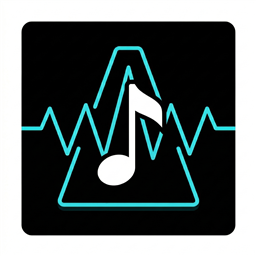

InnerBeat 節拍器
Android App
Google Play 上架 · 40 位使用者、11 個國家我的內在節拍不穩，一關掉節拍器速度就跑掉。一般節拍器只會發出聲音，所以我做了一個幫人「練到不需要它」的節拍器。
- 靜音小節：響幾小節、靜幾小節，靜音時畫面上完全沒有提示，只能靠自己數拍
- 跟打評分：跟著拍子點螢幕，即時顯示偏早或偏晚幾毫秒，並統計穩定度；有內建觸控延遲校正
- 每拍獨立細分：四分音符到六連音，每個音都能單獨設成強、中、弱或休止
- 播放中直接改速度和拍號，節拍不中斷；用原生音訊引擎，長時間播放不漂移